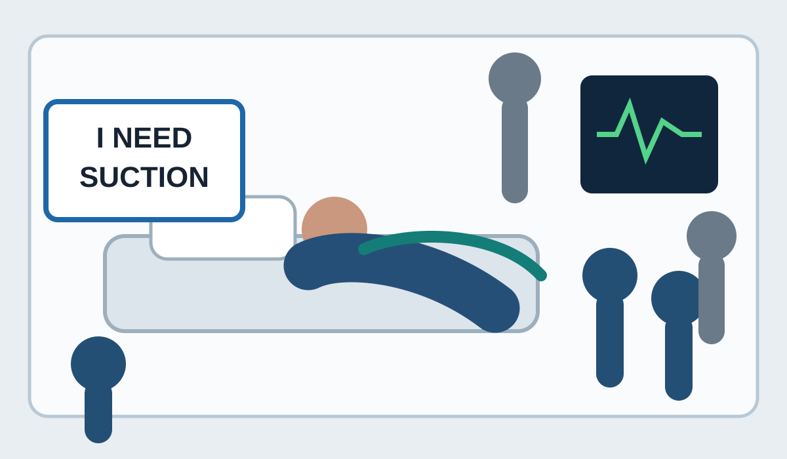

Communication access
AAC dock
Decision gate
Choose an action. The simulation rewards sequence, reassessment and direct communication—not speed alone.
Evidence-gated equipment
Instrumental action stations
Each station progresses through available → selected → checked → assigned → committed. Selection never authorises use.